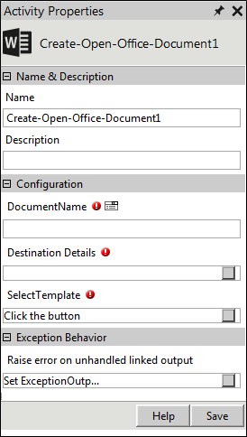

No
Activity description:
You can create Microsoft 2010 Word and Microsoft 2013 Word documents from the workflow using the Create-Office-Document activity. When you include this activity in the workflow, the activity uses the selected template and creates a new document in the specified location with the relevant data.
Creating MS Office Templates:
Steps to create an MS Word template
Note: Create a merge field name without spaces in between.
Workflow Variable for capturing Document Path
Create Office Document stores p hysical path information of the document in a variable of type string with the following syntax:
'^'+CurrentActivity.Name+'DocumentPath'
For example, ^CreateFileDocumentPath.
Activity Properties:
The Create-Open-Office-Document activity has to be configured by specifying appropriate values for the different properties in the Activity Properties area. The Activity Properties can be accessed by clicking the Activity Properties tool in the Tool Bar or by selecting the appropriate option from the right click menu for the Create-Open-Office-Document activity. The Activity Properties are organized under the following groups of related properties. The properties under each group are described in this topic.

Name & Description
The properties in the Name & Description group have been described below. You can use these properties to specify the name and description for the activity.
Name - This property can be used to specify a name for the activity.
Property Type: Optional (This property needs to be set only if necessary.)
Description - This property specifies a brief description to be displayed for the activity.
Property Type: Optional (This property needs to be set only if necessary.)
Configuration
The properties in the Configuration group have been described below. You can use these properties to configure the functionality of the activity.
Document Name - This property specifies the name of the new document.
Property Type: Mandatory (This property must be set if the activity is to be executed.)
Destination Details - This property specifies the details of the destination in which the document should be created such as the file path, the user name and password to access the document among others.
Property Type: Mandatory (This property must be set if the activity is to be executed.)
Steps to set the Destination Details property
See Create-Open-Office-Document: Destination Details for a detailed description of the Destination Details property window.
Select Template - This property specifies the template to be used for creating the document.
Property Type: Mandatory (This property must be set if the activity is to be executed.)
Steps to set the Select Template property
See Create-Open-Office-Document: Select Template for a detailed description of the Select Template property window.
Activity outputs:
The Create-Open-Office-Document Activity does not return any value.
Exception Behavior
Each activity has the Raise Error on Unhandled Linked Output property on click of which, it shows all the default configured mapped error outputs in red with their check boxes selected.
See Mapped Error Outputs for more details.